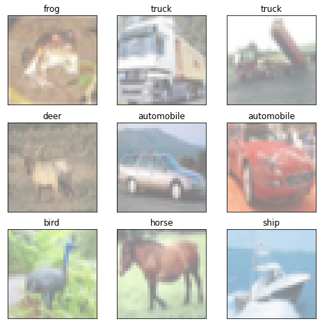

Contents
Example from here
import numpy as np
import torch
import torch.nn as nn
import torch.nn.functional as F
import torch.optim as optim
import matplotlib.pyplot as plt
from torch.utils.data.sampler import SubsetRandomSampler
from torch.utils.data import DataLoader
from torchvision import datasets, transforms
import matplotlib.pyplot as plt
%matplotlib inline
import torch.nn as nn
import torch.nn.functional as F
#Converting data to torch.FloatTensor
transform = transforms.ToTensor()
# Download the training and test datasets
train_data = datasets.CIFAR10(root='data', train=True, download=True, transform=transform)
test_data = datasets.CIFAR10(root='data', train=False, download=True, transform=transform)
Files already downloaded and verified
Files already downloaded and verified
train_loader = torch.utils.data.DataLoader(train_data, batch_size=32, num_workers=0)
test_loader = torch.utils.data.DataLoader(test_data, batch_size=32, num_workers=0)
def imshow(img):
img = img / 2 + 0.5
plt.imshow(np.transpose(img, (1, 2, 0)))
#Define the image classes
classes = ['airplane', 'automobile', 'bird', 'cat', 'deer', 'dog', 'frog', 'horse', 'ship', 'truck']
#Obtain one batch of training images
dataiter = iter(train_loader)
images, labels = dataiter.next()
images = images.numpy() # convert images to numpy for display
#Plot the images
fig = plt.figure(figsize=(8, 8))
# display 20 images
for idx in np.arange(9):
ax = fig.add_subplot(3, 3, idx+1, xticks=[], yticks=[])
imshow(images[idx])
ax.set_title(classes[labels[idx]])

#Define the Convolutional Autoencoder
class ConvAutoencoder(nn.Module):
def __init__(self):
super(ConvAutoencoder, self).__init__()
#Encoder
self.conv1 = nn.Conv2d(3, 16, 3, padding=1)
self.conv2 = nn.Conv2d(16, 4, 3, padding=1)
self.pool = nn.MaxPool2d(2, 2)
#Decoder
self.t_conv1 = nn.ConvTranspose2d(4, 16, 2, stride=2)
self.t_conv2 = nn.ConvTranspose2d(16, 3, 2, stride=2)
def forward(self, x):
x = F.relu(self.conv1(x))
x = self.pool(x)
x = F.relu(self.conv2(x))
x = self.pool(x)
x = F.relu(self.t_conv1(x))
x = F.sigmoid(self.t_conv2(x))
return x
#Instantiate the model
model = ConvAutoencoder()
print(model)
ConvAutoencoder(
(conv1): Conv2d(3, 16, kernel_size=(3, 3), stride=(1, 1), padding=(1, 1))
(conv2): Conv2d(16, 4, kernel_size=(3, 3), stride=(1, 1), padding=(1, 1))
(pool): MaxPool2d(kernel_size=2, stride=2, padding=0, dilation=1, ceil_mode=False)
(t_conv1): ConvTranspose2d(4, 16, kernel_size=(2, 2), stride=(2, 2))
(t_conv2): ConvTranspose2d(16, 3, kernel_size=(2, 2), stride=(2, 2))
)
#Loss function
criterion = nn.BCELoss()
#Optimizer
optimizer = torch.optim.Adam(model.parameters(), lr=0.001)
def get_device():
if torch.cuda.is_available():
device = 'cuda:0'
else:
device = 'cpu'
return device
device = get_device()
print(device)
model.to(device)
#Epochs
n_epochs = 100
for epoch in range(1, n_epochs+1):
# monitor training loss
train_loss = 0.0
#Training
for data in train_loader:
images, _ = data
images = images.to(device)
optimizer.zero_grad()
outputs = model(images)
loss = criterion(outputs, images)
loss.backward()
optimizer.step()
train_loss += loss.item()*images.size(0)
train_loss = train_loss/len(train_loader)
print('Epoch: {} \tTraining Loss: {:.6f}'.format(epoch, train_loss))
#Batch of test images
dataiter = iter(test_loader)
images, labels = dataiter.next()
#Sample outputs
output = model(images)
images = images.numpy()
output = output.view(batch_size, 3, 32, 32)
output = output.detach().numpy()
#Original Images
print("Original Images")
fig, axes = plt.subplots(nrows=1, ncols=5, sharex=True, sharey=True, figsize=(12,4))
for idx in np.arange(5):
ax = fig.add_subplot(1, 5, idx+1, xticks=[], yticks=[])
imshow(images[idx])
ax.set_title(classes[labels[idx]])
plt.show()
#Reconstructed Images
print('Reconstructed Images')
fig, axes = plt.subplots(nrows=1, ncols=5, sharex=True, sharey=True, figsize=(12,4))
for idx in np.arange(5):
ax = fig.add_subplot(1, 5, idx+1, xticks=[], yticks=[])
imshow(output[idx])
ax.set_title(classes[labels[idx]])
plt.show()